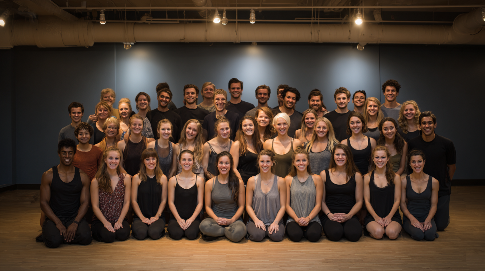

Year: 1984
Welcome to our humble time machine
Year: 1984
Year: 1984
A wonderful year of beginnings.
More details about 1984 can go here.
Year: 2001
Year: 2001
Embracing the new millennium.
Further reflections on 2001.
Year: 2023
Year: 2023
A year of deep practice.
Insights from our 2023 graduates.
Year: 1984 (Cont.)
Year: 1984 (Cont.)
Continuing the journey.
Additional memories from 1984.
Year: 2001 (Cont.)
Year: 2001 (Cont.)
Exploring new asanas.
Student stories from 2001.
Year: 2023 (Cont.)
Year: 2023 (Cont.)
Finding peace and stillness.
Reflections on the 2023 curriculum.
Year: 1984 (Alumni)
Year: 1984 (Alumni)
A different perspective this year.
Alumni notes from 1984.